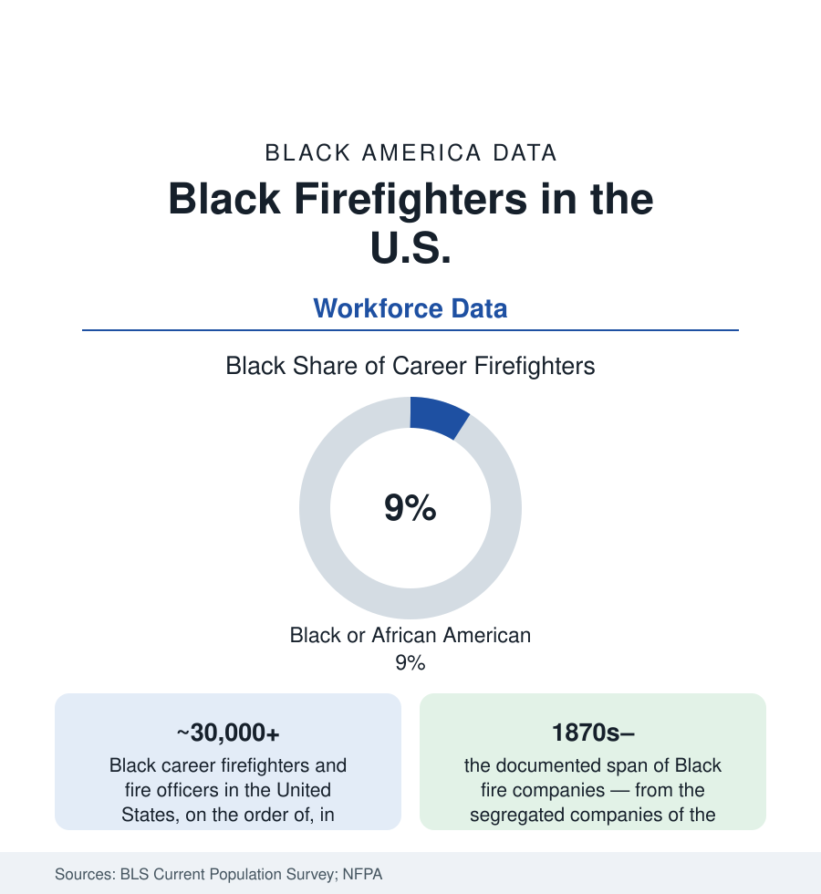

Black Employment
Black Firefighters: The Firehouse Ladder and Its Rungs
Black firefighters make up roughly 8–9% of America's career fire service — a share built city by city against the consent-decree era's open fights. The labor data.

The fire service is America's most locally governed workforce — thousands of municipal departments, each hiring its own — and its racial data tell a city-by-city story: Black firefighters hold roughly 8–9% of career firefighter jobs nationally in the federal counts, with big-city departments from majority-Black rosters to near-zero, and a history in which the Black fire company is among the oldest Black municipal institutions in the country. This article reads the firehouse ladder: who climbs it, where the rungs were sawn, and how the numbers moved.
The Numbers and Their Geography
The Current Population Survey and the NFPA's department profiles put Black representation in the career fire service in the high single digits nationally — below the Black share of the municipal workforce generally and far below the community's share of the cities the biggest departments serve. The distribution is the story: departments in majority-Black cities (Detroit, Baltimore, Atlanta, Washington, St. Louis, Birmingham) run Black-majority or near-parity rosters built over two generations, while many suburban, Western, and small-city departments record Black shares in the low single digits — a geography that maps almost exactly onto the litigation history, because the modern numbers were made by lawsuits. The officer data thin with rank in the familiar pattern: Black chiefs head a small but landmark-holding set of departments (the big-city chief appointments of the past four decades, from the first Black chiefs of major departments to the present), with the deputy and battalion ranks the pipeline the promotion-exam data govern. The EMS merger matters to the count: as departments absorbed ambulance service, the paramedic and EMT workforce (more diverse in the federal data) entered the fire-service totals, changing the composition the headline figures describe.
The Consent-Decree Generation
The modern fire service's demographics were set in the 1970s courtroom: department after department — the federal pattern-or-practice cases and the local suits brought by Black firefighters' associations (the Vulcan Society in New York, founded 1940; its counterparts in city after city; the International Association of Black Professional Fire Fighters, founded 1969, as the national umbrella) — established that the era's entrance exams and list systems excluded Black applicants at rates the courts dismantled. The decrees' hiring goals moved the big-city numbers across the 1970s and 80s into the rosters above; the fights then shifted to promotion exams, whose disparity litigation runs into the present century (the Supreme Court's 2009 Ricci case, out of New Haven's discarded exam, is the era's landmark). The examination science file is its own literature: validated job-simulation and cognitive batteries versus the legacy pencil tests, the candidate-preparation programs (the community CPAT and mentorship pipelines the Black associations run), and the residency and veteran-preference variables that shape applicant pools before a single test is given.
The Older Lineage: Segregated Companies and First Stations
Black firefighting predates the decrees by a century: the historical record holds Black volunteer and municipal companies from the early republic — New Orleans' companies of free men of color, the segregated engine companies of the Jim Crow South and border cities (Winston-Salem's and Raleigh's Black companies, Baltimore's long fight), the first Black firefighters of the Northern departments hired in the late nineteenth and early twentieth centuries into separate or hostile houses. The desegregation of the firehouse itself (the bunkroom and the kitchen table as the integration frontier, in the oral histories the associations preserve) proceeded station by station into the 1970s in much of the country — a workplace-integration timeline later than the schools' in many cities, because the firehouse's residential, communal character made it the municipal family's last room to open. The Black fire museums and the IABPFF's history projects hold this archive as institutional memory with a recruiting purpose.
Health, Risk, and the Retirement File
The occupational-health data give the fire service its somber ledger: elevated cancer incidence (the presumptive-coverage laws the state data track, expanded classification by classification), cardiovascular events as the leading line-of-duty death cause, and the behavioral-health file of the current era. The pension data complete the career picture — the 20-and-out and DROP structures that made the firehouse, like the post office and the military, a middle-class machine for the families who got in: the decree generation now retiring on full pensions in the cities they sued to join, their children entering applicant pools their parents' associations built. The recruiting crisis of the current decade (applicant declines across municipal public safety) has departments competing for the same candidates the pipelines produce — the newest variable in a data series that has never once moved by accident.
Reading the Firehouse Data
Nine percent nationally, majorities where the lawsuits landed, chiefs where the pipelines held: the fire service is the cleanest municipal dataset on how representation actually changes — not by drift, but by decree, organization, and the unglamorous machinery of validated exams and mentored applicants. The ladder was always there. The data record who was finally allowed to climb it, and what it paid the families who did.
More in Black Employment
The Black Unemployment Rate: The Two-to-One Pattern
Black unemployment runs at roughly twice the White rate — 5.5 percent against 3.3 percent in annual averages — a ratio stable across five decades of federal data. How it is measured and why it persists.
Black Median Weekly Earnings: The 80-Cent Ratio
Black full-time workers earn a median of about $900 a week — roughly 80 cents for every dollar White workers earn. The BLS earnings data by group, gender, and occupation.
Black Labor Force Participation: Working at National Rates
Black labor force participation runs at roughly the national rate — and Black women participate at higher rates than White women. The BLS participation data.
Source: U.S. Bureau of Labor Statistics, Current Population Survey; National Fire Protection Association fire department profiles; U.S. Fire Administration; International Association of Black Professional Fire Fighters.